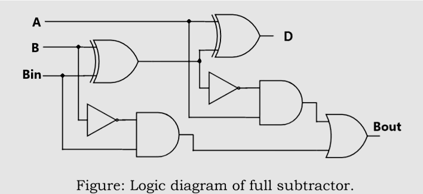

Detection of SA0 faults on the logic circuit that represents the a Full-Subtractor

Objective
Test stuck at zero fault at different locations on the I/O wires of the logic gates of a full subtractor using HDL simulator like Xilinx and note down the results obtained, timing diagrams and logic diagrams.